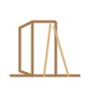
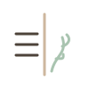

Porta I
As Sete Faces do Medo
o que estou a proteger?
Nao mostram monstros. Mostram as pequenas fracturas por onde o medo aprendeu a vestir-se de vida normal.
grave e mineral · assinatura: a fenda luminosa
ver o board →
Porta II
Os 7 Sinais de Desencaixe
onde fica casa agora?
A unica porta que cheira a casa. Falam do lugar para onde regressas quando deixas de te proteger.
suave e domestica · assinatura: o Limiar
ver o board →
Porta III
A Grande Transicao
que mundo esta a nascer?
Nao mostra o futuro ao longe. Mostra o futuro ja escondido dentro de uma cozinha de hoje, a espera de nome.
lucida e do presente · assinatura: dois tempos
ver o board →